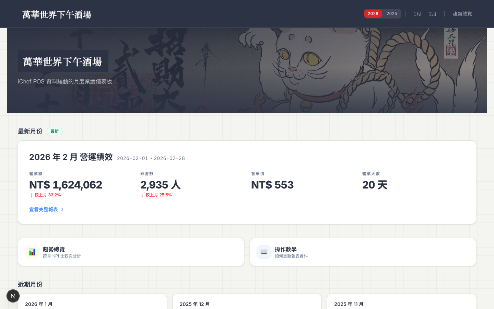
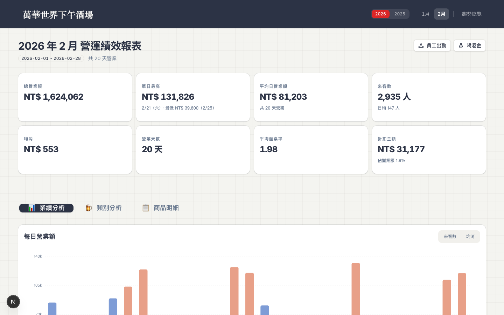
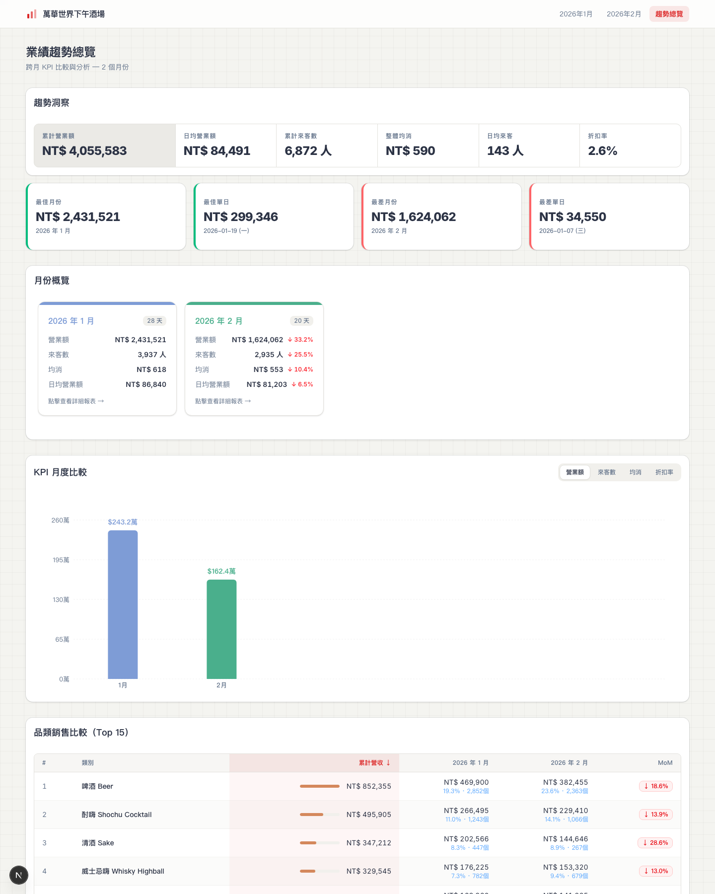

萬華世界業績儀表板
一間下午酒場的老闆，想把每個月從 POS 系統匯出的 Excel 報表變成看得懂、能追蹤的視覺化儀表板。沒有工程師背景，只有 Claude Code 和一個模糊的想法。

為什麼要做這件事
萬華世界是一間下午酒場，用 iChef 當 POS 系統。每個月結算的時候，iChef 後台可以匯出 Excel 報表——業績概況、類別銷售、商品排行、員工打卡紀錄，一共 6 個檔案。
問題是：Excel 看數字很痛苦。
每個月要開 6 個檔案，自己算均消、比較上個月的差異、看哪個品類賣得好。數字是有的，但散在不同的 sheet 裡，沒有全貌。想知道「這個月比上個月好還是差」，得自己把兩個月的 Excel 放在一起比。
打開一個網頁，所有數字一目瞭然——月營業額、來客數、均消、每日走勢、哪個品類賺錢、哪個商品賣最好，全部在同一個畫面上。而且每個月只要把新的 Excel 丟進去，報表就自動更新。
技術選型
| 工具 | 選的理由 |
|---|---|
| Python (pandas) | Excel 解析和資料轉換，Claude 建議的，我不需要懂語法 |
| Next.js + Tailwind | 第二版重寫時選的，Claude 提出三個方案後我選了這個——零設定部署到 Vercel |
| shadcn/ui | UI 元件庫，讓儀表板看起來像正式產品而不是學生作業 |
| Recharts | 圖表庫，取代第一版的 Chart.js（和 Next.js 生態系更合） |
| TanStack Table | 表格元件，支援搜尋、排序、篩選、分頁——商品明細表有 100+ 個品項 |
| Vercel | 部署平台，Git push 後自動上線，不用管伺服器 |
推進方式
整個專案從第一行程式碼到上線，經歷了 17 次 Claude Code session，跨度約三週。不是一口氣做完的，而是每次有空的時候開一個 session，做一個階段。
- 所有程式碼（Python 腳本、React 元件、CSS、API routes）
- 技術選型建議（提出方案 + 說明優缺點）
- Debug（描述症狀，AI 找原因 + 修復）
- 架構設計（目錄結構、路由規劃、元件拆分）
- 部署設定（Vercel、middleware、環境變數）
- 定義需求：要追蹤哪些 KPI、資訊優先順序
- 業務邏輯判斷：「均消」怎麼算、日期類型怎麼分
- 視覺審查：字太小、顏色不對、排版擠了
- 決策：三個方案中選一個、深色 vs 淺色主題
- 提供原始資料：iChef Excel 檔案
最開始的想法很簡單——先讓資料能被看到就好。Claude 寫了一個 Python 腳本，把 6 個 iChef Excel 解析成一個 JSON 檔案。然後用純 HTML + CSS + Chart.js 做了第一版儀表板。
這個版本的問題是：每新增一個月份，要手動複製一整個 HTML 檔案再改裡面的資料路徑。而且 CSS 用的是一整個大檔案，改一個地方可能別的地方就壞了。
想改善視覺效果，結果越改越亂。CSS 從一個設計系統開始，但因為每次修改都只能往底部加 patch，最後變成 1200 行的四層結構——新名字定義了但 HTML 用的是舊名字，改了新的不會動，改了舊的不知道會影響什麼。
決定用 Next.js 從頭寫。這是整個專案最關鍵的決定——不是修修補補，而是用對的架構重新來。Claude 提出了三個方案（Astro、Next.js、純 Vite），我選了 Next.js，因為另一個專案的經驗讓我知道 Vercel + Next.js 的部署體驗很好。
重寫後，新增月份變成「放一個 JSON 檔案進去」就好，不用改任何程式碼。動態路由 app/month/[id] 自動處理所有月份。
UI 全面升級（8 格 KPI 卡片、可互動的表格、員工排班搜尋）、部署到 Vercel、加密碼保護、建自動化 Skill、寫使用教學頁面。
這個階段的特點是：每個 session 的 scope 都很小，一次只做一件事。不再是「大幅重寫」，而是「精確添加」。
加入年度目標追蹤——團隊每年會設定營業額目標（例如 2026 年目標 NT$2,100 萬），希望在趨勢頁面隨時看到達成進度。
這個 session 的互動模式很有代表性：我提出需求（「想追蹤年度目標」），Claude 先規劃完整方案（P0~P3 四個層級），我只挑了 P0 + P1。然後在 UI 設計上來回了好幾輪——從一張大卡片 → 改成右側滑出面板 → 調整卡片層級 → 加入進度狀態色彩 → 合併趨勢洞察為 5×2 網格 → 月份卡片改成中性灰 → Tab 按鈕改成深灰 pill + emoji。每一步都是我看到畫面後，用一句話描述感受（「太花了」「好像兩個框套在一起」「鮮紅色太突兀」），Claude 立刻調整。
這是目前為止範圍最大的一次 session——一口氣做了五件事：
- 匯入 2025 年全年資料——12 個月份的 iChef Excel 一次轉檔完成，儀表板從 2 個月暴增到 14 個月。
- 趨勢頁年份篩選——加入 Year pill 切換（2025 / 2026）。Claude 先做了 server-side 過濾，切換時卡頓明顯；我反映後改成 client-side 過濾，切換體驗變成即時。
- 品類趨勢折線圖——X 軸月份，每條折線代表一個品類，自由勾選最多 6 個品類，支援營收/銷量切換。讓「精釀啤酒這半年的銷售趨勢」一目了然。
- Drill-down 導航——品類比較表的月份數字變成可點擊的連結。我修正了 Claude 的方向：從原本導到「類別分析」Tab，改為導到「商品明細」Tab + 自動篩選品類——因為使用者真正想看的是品類下的具體商品。
- 首頁重新設計——原本 14 張月份卡片一字排開太雜亂。改成 Spotlight 模式：Hero Banner（浮世繪品牌插畫）+ 最新月份大面積展示 + 近 3 個月小卡片 + 快捷入口。
這個 session 也展現了 UI 微調的價值：首頁做完後，我連續提了三輪視覺回饋——「營收紅色字有點奇怪」→ 改深鐵灰；「輔助資訊太灰」→ 加底色標籤；「卡片太灰黑，資訊層級不清楚」→ 人數和天數改成藍/琥珀色 pill 標籤。每輪都是一句話，Claude 秒改。
踩到的坑，讓我更懂的事
第一版的 CSS 設計系統看起來很完美：統一的 design tokens、BEM 命名、漂亮的深色主題。但每次 session 做 UI 調整時，改了一個東西就壞了另一個——因為 HTML 用的 class 名和 CSS 定義的 class 名不一致。
最後 styles.css 變成 1200 行的四層結構：新定義 → 舊 token 映射 → 舊 class 補丁 → 各種 session 累積的 patch。
重寫到 Next.js 後，發現圖表裡的數字字體和外面不一樣。原因是 Recharts 用 SVG 渲染，CSS class 不會 cascade 進 SVG 元素。必須在每個 Recharts 元件的 props 上直接寫 fontFamily。
Python 用 uv 管理，Node.js 用 nvm 管理。但 Claude Code 的 shell 環境抓不到這些工具的路徑。另外 Python 腳本用了 PEP 723 inline metadata，執行方式是 uv run --script，不是 uv run python——這個差異 debug 了好幾輪。
第一版用了很酷的深色主題，看起來像科幻電影的控制台。但實際用起來，大量數字和表格在深色背景上很難區分主次。重寫時改成淺色主題（暖灰底 + 白色卡片），可讀性大幅提升。
趨勢頁加年份篩選時，Claude 第一版用了 URL 驅動的方式：切換年份 → URL 改變 → 頁面重新渲染。邏輯上完全正確，但體感上有明顯卡頓。改成 client-side 方案（一次載入全部資料 + useMemo 即時過濾），切換體感從「等一下」變成「瞬間」。
品類比較表加了可點擊的月份欄位，Claude 預設導到「類別分析」Tab。聽起來合理——你點了品類，當然是看品類分析。但我立刻覺得不對：「如果我已經在看品類比較的全景圖了，點進去應該是看更細的東西——也就是該品類下面有哪些具體商品。」所以改成導到「商品明細」Tab + 自動篩選該品類。
14 張月份卡片一字排開，第一眼的感覺是壓迫。不是資訊不對，而是什麼都看到就等於什麼都沒看到。改成 Spotlight 模式後，首頁只呈現最新月份和近 3 個月。其他月份在 Navbar 和趨勢頁裡隨時可達。
最終樣貌
現在的萬華世界業績儀表板是一個完整的 Next.js 應用，部署在 Vercel 上，有密碼保護，涵蓋 2025 全年 + 2026 年 1-2 月共 14 個月的報表。
浮世繪風格的 Hero Banner 搭配品牌 Logo，最新月份以 Spotlight 大面積呈現（4 個 KPI + MoM 比較），下方 3 張近期月份小卡片帶彩色 pill 標籤（藍色人數 / 琥珀色天數），再加「趨勢總覽」和「操作教學」快捷入口。

- 📊 業績分析：8 格 KPI 卡片（營業額、來客數、均消、折扣等）+ 每日營業額走勢圖 + 每日明細表（含員工排班搜尋）
- 🍺 類別分析：類別長條圖 + 散佈圖雙視圖 + Top 10 品項 + 類別詳細表（可點開看月比較）
- 📋 商品明細：100+ 品項的可搜尋、可排序、可篩選表格（點擊品項看詳細數據 + 月比較）

- 🗓 年份篩選：Year pill 切換（2025 / 2026），client-side 即時過濾，切換不卡頓
- 🎯 年度目標追蹤：右上角徽章顯示達成率，點擊滑出面板——含進度條、達成率（色彩反映狀態）、預估全年
- 📊 趨勢洞察 5×2 網格：累計營業額、日均、來客數等 5 個 KPI + 最佳/最差月份和單日紀錄
- 📈 KPI 月度比較：柱狀圖可切換指標，營業額模式下有紅色月均目標虛線
- 📉 品類趨勢折線圖：最多 6 條品類折線，營收/銷量切換，色碼 chip 多選
- 🔗 品類銷售比較表：排序、sticky 前兩欄、可點擊月份欄位 drill-down 到該月商品明細 + 自動篩選品類
新增月份的流程：把 6 個 Excel 放進資料夾 → 對 Claude Code 說「幫我加 3 月報表」→ 自動轉換 + commit + push → Vercel 自動部署。整個過程不到 2 分鐘。
如果繼續往下
- 商品排行趨勢——類似品類趨勢圖，但追蹤單一商品在不同月份的銷售變化。
- 年度同期比較（YoY）——2025 vs 2026 的同月比較，看年度成長。
- 自動抓取 iChef 資料——現在還是要手動下載 Excel。如果 iChef 有 API，可以做成全自動——每月 1 號自動抓上月資料。
- 目標細化——目前年度目標只有營業額全年均分。未來可以支援月份差異化目標（旺季/淡季不同）、甚至來客數、均消等多維度目標。
Takeaway
一個非工程師背景的餐飲業者，用 Claude Code 在三週 17 個 session 內，從零建出涵蓋 14 個月資料的業績儀表板。關鍵不是 AI 會寫程式碼——而是 AI 能夠理解「我想看到什麼」，然後選出對的工具和架構來實現。
三種最有效的提問模式：
- 症狀描述型——「表格的字體看起來怪怪的」「卡片太灰黑，資訊層級不夠清楚」— AI 根據症狀推斷原因並修正
- 需求驅動型——「我想追蹤年度目標達成率」「同事常常漏掉分頁」— AI 規劃方案讓你挑
- UX 方向修正型——「導到商品明細，但是把那個品項的 filter 選取，這樣會比較合乎邏輯」— 指出 AI 的方向不對並說明為什麼
Session 17 還展現了一個重要模式——批量匯入 + 功能疊加：先一次導入 12 個月歷史資料，再在資料量暴增的基礎上做跨年分析功能。「先撐大資料量，再加分析維度」的節奏，讓每個新功能一做出來就有豐富的資料可以驗證。
這個方法適用於任何「有結構化資料，想做成視覺化儀表板」的情境。POS 系統的 Excel、CRM 匯出的 CSV、Google Sheets 的銷售數據——只要資料格式固定，都可以用同樣的流程。
Session 17 的模式可以直接複製：如果你的儀表板已經做好基礎版本，想加入歷史資料和跨期分析——先批量導入歷史資料（轉檔腳本已經有了），再逐步疊加年份篩選、趨勢圖表、drill-down 導航。每一步都可以獨立驗證。
「我有一組 [資料來源] 的 [格式] 資料，每 [週期] 更新一次。我想做一個儀表板，主要想看 [列出 3-5 個你最想追蹤的指標]。你建議怎麼開始？」
「我的儀表板已經有 [N 個月] 的資料了，我想加入跨月趨勢分析和年份篩選。目前的架構是 [描述]，你建議怎麼擴充？」